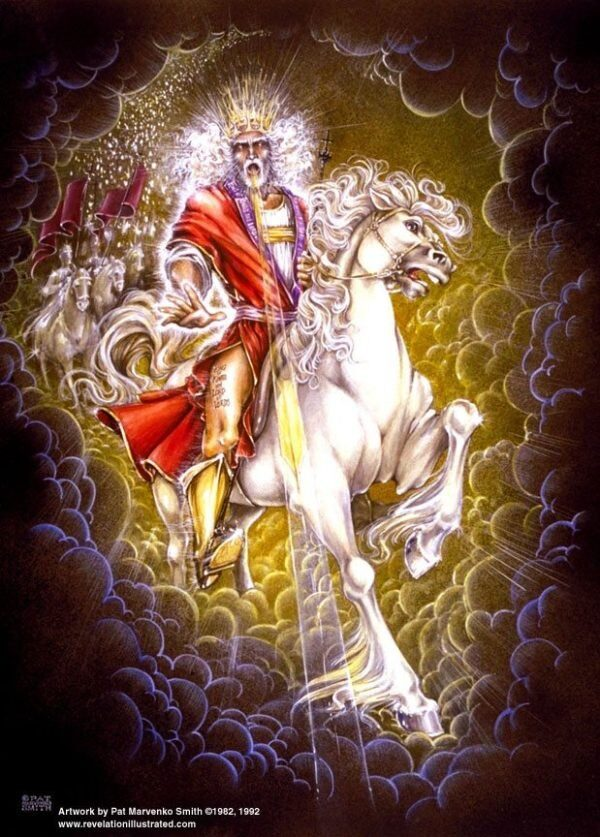

Our Citizens
Citizens of the kingdom
The kingdom of God has its own citizens — not made by birth or border, but born from above and written in the Lamb's book of life. They are subjects of one King, and stand under his law, which abideth when heaven and earth pass.
Strangers made fellowcitizens
By nature we were aliens, strangers to the covenants of promise, without hope. But in Christ the stranger is brought near and given a place — no longer a foreigner, but a fellowcitizen with the saints and of God's own household.
“That at that time ye were without Christ, being aliens from the commonwealth of Israel, and strangers from the covenants of promise, having no hope, and without God in the world.”
Ephesians 2:12
“Now therefore ye are no more strangers and foreigners, but fellowcitizens with the saints, and of the household of God.”
Ephesians 2:19

Born again into the kingdom
This citizenship is not inherited from the flesh but given in the new birth. As many as receive him are given power to become the sons of God, and are translated into the kingdom of his dear Son.
“Jesus answered and said unto him, Verily, verily, I say unto thee, Except a man be born again, he cannot see the kingdom of God.”
John 3:3
“But as many as received him, to them gave he power to become the sons of God, [even] to them that believe on his name.”
John 1:12
“Who hath delivered us from the power of darkness, and hath translated [us] into the kingdom of his dear Son.”
Colossians 1:13
By faith and promise
Abraham's children are those who believe. The covenant belongs to the child of promise.
“Know ye therefore that they which are of faith, the same are the children of Abraham.”
Galatians 3:7
“They which are the children of the flesh, these [are] not the children of God: but the children of the promise are counted for the seed.”
Romans 9:8
“And if ye [be] Christ's, then are ye Abraham's seed, and heirs according to the promise.”
Galatians 3:29
“Therefore it is of faith, that it might be by grace; to the end the promise might be sure to all the seed… which is of the faith of Abraham; who is the father of us all.”
Romans 4:16
Led by the Spirit
The children of God are those led by his Spirit — and the Spirit leads them into the keeping of his law. To be led of the Spirit is not to be released from obedience, but to be brought under a lawgiver who is himself the life; for the Spirit speaks of the same Christ who is the Lawgiver. The freedom Paul speaks of is freedom from the covenant of works, not freedom from the King's authority — and no one is set loose from the law of Christ.
“For as many as are led by the Spirit of God, they are the sons of God.”
Romans 8:14
“Howbeit when he, the Spirit of truth, is come, he will guide you into all truth.”
John 16:13
“For this is the love of God, that we keep his commandments: and his commandments are not grievous.”
1 John 5:3
“If ye love me, keep my commandments.”
John 14:15
Known by their fruits
The evidence of belonging is the fruit of the Spirit: love, joy, peace, and the rest. Fruit grows from the root; it does not earn the place.
“Ye shall know them by their fruits. Do men gather grapes of thorns, or figs of thistles?”
Matthew 7:16
“The fruit of the Spirit is love, joy, peace, longsuffering, gentleness, goodness, faith, meekness, temperance: against such there is no law.”
Galatians 5:22–23
“By this shall all [men] know that ye are my disciples, if ye have love one to another.”
John 13:35
One fold, out of every nation
God gathers his people from all nations into one fold under one shepherd. The rolls of this kingdom are open to every kindred and tongue; in Christ the old divisions fall away, and there is no preferred people and no excluded people.
“Other sheep I have, which are not of this fold: them also I must bring… and there shall be one fold, [and] one shepherd.”
John 10:16
“There is neither Jew nor Greek, there is neither bond nor free… for ye are all one in Christ Jesus.”
Galatians 3:28
“Thou art worthy to take the book, and to open the seals thereof: for thou wast slain, and hast redeemed us to God by thy blood out of every kindred, and tongue, and people, and nation.”
Revelation 5:9
“Where there is neither Greek nor Jew, circumcision nor uncircumcision, Barbarian, Scythian, bond [nor] free: but Christ [is] all, and in all.”
Colossians 3:11
“For there is no difference between the Jew and the Greek: for the same Lord over all is rich unto all that call upon him.”
Romans 10:12
A better country, a city to come
Here we are strangers and pilgrims. Our conversation is in heaven, our names written in the Lamb's book of life, and God has prepared for his people a city.
“For our conversation is in heaven; from whence also we look for the Saviour, the Lord Jesus Christ.”
Philippians 3:20
“For here have we no continuing city, but we seek one to come.”
Hebrews 13:14
“But now they desire a better [country], that is, an heavenly: wherefore God is not ashamed to be called their God: for he hath prepared for them a city.”
Hebrews 11:16
“And there shall in no wise enter into it any thing that defileth, neither [whatsoever] worketh abomination, or [maketh] a lie: but they which are written in the Lamb's book of life.”
Revelation 21:27
The Spirit of adoption
We do not enter this kingdom as slaves but as sons. The Spirit himself witnesses with our spirit that we belong, and teaches us to cry, Abba, Father.
“For ye have not received the spirit of bondage again to fear; but ye have received the Spirit of adoption, whereby we cry, Abba, Father.”
Romans 8:15
“The Spirit itself beareth witness with our spirit, that we are the children of God.”
Romans 8:16
Subjects of the King, and of his law
Citizenship in this kingdom is never freedom from authority — it is subjection to the one authority. Its citizens are the King's subjects first and foremost, and the King's law is the law they live under. Every ordinance they obey beneath him is an ordinance of his giving, and the life they are called to is the life of obedience to him. This is no chain; it is the order of the kingdom he purchased, and it is the same order that holds every throne.
“Submit yourselves to every ordinance of man for the Lord's sake: whether it be to the king, as supreme; or unto governors…”
1 Peter 2:13–14
“But be ye doers of the word, and not hearers only, deceiving your own selves.”
James 1:22
“And what nation [is] there so great, that hath statutes and judgments so righteous as all this law, which I set before you this day?”
Deuteronomy 4:8
“Thy word is a lamp unto my feet, and a light unto my path.”
Psalm 119:105
Dual citizenship is not allowed
This kingdom does not share its citizens with another. There is one King, one Lawgiver, and one citizenship — and no man can serve two masters. A believer may sojourn in any land and render what residency or domicile obligates, but his citizenship, his belonging and his allegiance, is not divided: it is kept in heaven with the King. To hold citizenship in two kingdoms at once is to halt between two opinions, and the Scripture will not have it.
“No man can serve two masters: for either he will hate the one, and love the other; or else he will hold to the one, and despise the other.”
Matthew 6:24
“A double minded man [is] unstable in all his ways.”
James 1:8
“How long halt ye between two opinions? if the LORD [be] God, follow him.”
1 Kings 18:21
“Every kingdom divided against itself is brought to desolation; and every city or house divided against itself shall not stand:”
Matthew 12:25
One King. One law. One citizenship — and it is not of this world.
A chosen generation, a royal priesthood
Every citizen is given a standing and a calling — a people taken out of darkness that they might show forth the praises of him who called them into his marvellous light.
“But ye [are] a chosen generation, a royal priesthood, an holy nation, a peculiar people; that ye should shew forth the praises of him who hath called you out of darkness into his marvellous light.”
1 Peter 2:9
“Which in time past [were] not a people, but [are] now the people of God: which had not obtained mercy, but now have obtained mercy.”
1 Peter 2:10
Built together for an habitation of God
This kingdom is not a scattered crowd but a temple under construction — every citizen a living stone, joined and framed together in Christ by the Spirit.
“And are built upon the foundation of the apostles and prophets, Jesus Christ himself being the chief corner [stone].”
Ephesians 2:20
“In whom all the building fitly framed together groweth unto an holy temple in the Lord.”
Ephesians 2:21
“In whom ye also are builded together for an habitation of God through the Spirit.”
Ephesians 2:22
Not of the world
This citizenship sets us apart. The world may hate what it does not own, yet the child of the kingdom belongs to another country and answers to a higher throne.
“Because ye are not of the world, but I have chosen you out of the world, therefore the world hateth you.”
John 15:19
“I have given them thy word; and the world hath hated them, because they are not of the world, even as I am not of the world.”
John 17:14
Come and be a citizen
The gate stands open to every nation. Come to the King, and be received.
Questions on Our Citizens
How does one become a citizen of the kingdom?
By the new birth — not by descent, nation, or works. “Except a man be born again, he cannot see the kingdom of God” (John 3:3); as many as receive him are given power to become the sons of God (John 1:12).
Is citizenship inherited by blood or nationality?
No. The children of the flesh are not the children of God; the children of the promise are counted for the seed (Romans 9:8). God gathers his people out of every kindred, and tongue, and people, and nation (Revelation 5:9).
What if I belong to no church or group?
Belonging is by faith and promise, not by membership in any body of men. As many as are led by the Spirit of God are the sons of God (Romans 8:14).
Can a citizen be cast out?
He that cometh to Christ he will in no wise cast out (John 6:37). Those written in the Lamb's book of life enter into the city (Revelation 21:27).
Where is our citizenship?
In heaven. “For our conversation is in heaven” (Philippians 3:20); here we have no continuing city, but we seek one to come (Hebrews 13:14).
Is dual citizenship allowed?
No. “No man can serve two masters” (Matthew 6:24), and “a double minded man [is] unstable in all his ways” (James 1:8). A citizen of this kingdom may sojourn in any land and render what is obligated there, but his citizenship is one — with the King — for “every kingdom divided against itself is brought to desolation” (Matthew 12:25).